AddSelfLoops is a function you will probably want to use alongside PreDeterminize,
to add self-loops to any FSTs that you compose on the left hand side of the one
modified by PreDeterminize.
This function inserts loops with “special symbols” [e.g. #0, #1] into an FST.
This is done at each final state and each state with non-epsilon output symbols on
at least one arc out of it. This is to ensure that these symbols, when inserted into
the input side of an FST we will compose with on the right, can “pass through” this
FST.
At input, isyms and osyms must be vectors of the same size n, corresponding
to symbols that currently do not exist in ‘fst’. For each state in n that has
non-epsilon symbols on the output side of arcs leaving it, or which is a final state,
this function inserts n self-loops with unit weight and one of the n pairs
of symbols on its input and output.
Caution
The input FST is modified in-place.
Parameters
ifst – The input FST.
isyms – A list of input symbols.
osyms – A list of output symbols. Must satisfy len(isyms)==len(osyms).
1importgraphviz 2 3importkaldifst 4 5s=""" 60 1 a p 71 81 2 b q 92 3 c r103 4 f t113 0 d s125 0 f t13"""141516sym1=kaldifst.SymbolTable(name="sym1")17sym1.add_symbol("a",1)18sym1.add_symbol("b",2)19sym1.add_symbol("c",3)20sym1.add_symbol("d",4)21sym1.add_symbol("f",5)22sym1.add_symbol("#0",6)23sym1.add_symbol("#1",7)2425sym2=kaldifst.SymbolTable(name="sym2")26sym2.add_symbol("p",1)27sym2.add_symbol("q",2)28sym2.add_symbol("r",3)29sym2.add_symbol("s",4)30sym2.add_symbol("t",5)31sym2.add_symbol("#0",6)32sym2.add_symbol("#1",7)3334fst=kaldifst.compile(s=s,acceptor=False,isymbols=sym1,osymbols=sym2)3536fst.input_symbols=sym137fst.output_symbols=sym23839fst_dot=kaldifst.draw(fst,acceptor=False,portrait=True)40fst_source=graphviz.Source(fst_dot)41fst_source.render(outfile="fst.svg")4243kaldifst.add_self_loops(fst,isyms=[6,7],osyms=[6,7])4445fst_dot=kaldifst.draw(fst,acceptor=False,portrait=True)46fst_source=graphviz.Source(fst_dot)47fst_source.render(outfile="fst-add-self-loops.svg")
This operation computes the composition of two transducers. If A transduces
string x to y with weight a and B transduces y to z with weight b, then their
composition transduces string x to z with weight a ⊗ b.
1importgraphviz 2 3importkaldifst 4 5s1=""" 60 1 a q 1 70 2 a r 2.5 81 1 c s 1 91 0102 2.511"""1213sym1=kaldifst.SymbolTable(name="sym1")14sym1.add_symbol("a",1)15sym1.add_symbol("c",2)1617sym2=kaldifst.SymbolTable(name="sym2")18sym2.add_symbol("q",1)19sym2.add_symbol("r",2)20sym2.add_symbol("s",3)2122a=kaldifst.compile(s=s1,acceptor=False,isymbols=sym1,osymbols=sym2)23a.input_symbols=sym124a.output_symbols=sym22526s2="""270 1 q f 1280 2 r h 3291 2 s g 2.5302 2 s j 1.5312 232"""3334sym3=kaldifst.SymbolTable(name="sym3")35sym3.add_symbol("f",1)36sym3.add_symbol("g",2)37sym3.add_symbol("h",3)38sym3.add_symbol("j",4)3940b=kaldifst.compile(s=s2,acceptor=False,isymbols=sym2,osymbols=sym3)41b.input_symbols=sym242b.output_symbols=sym34344a_dot=kaldifst.draw(a,acceptor=False,portrait=True)45a_source=graphviz.Source(a_dot)46a_source.render(outfile="a.svg")4748b_dot=kaldifst.draw(b,acceptor=False,portrait=True)49b_source=graphviz.Source(b_dot)50b_source.render(outfile="b.svg")5152# sort b by ilabel. It is sorted in-place53kaldifst.arcsort(b,sort_type="ilabel")5455c=kaldifst.compose(a,b)56c_dot=kaldifst.draw(c,acceptor=False,portrait=True)57c_source=graphviz.Source(c_dot)58c_source.render(outfile="c.svg")
compose_context composes efficiently with a context fst
that it generates.
Without disambig_syms specified, it
assumes that all input symbols of ifst are phones.
It adds the subsequential symbol itself (it does not
appear in the output so doesn’t need to be specified by the user).
the disambig_syms is a list of disambiguation symbols on the LHS
of ifst. The symbols on the LHS of out.fst are indexes into
the ilabels.list file, which is a kaldi-format file containing a
vector<vector<int32>>, which specifies what the labels mean in
terms of windows of symbols.
Parameters
disambig_syms – List of disambiguation symbols, e.g. the integer ids of #0, #1, #2 … in
the phones.txt.
context_width – Size of context window, e.g. 3 for triphone.
central_position – Central position in phonetic context window (zero-based index), e.g. 1 for
triphone.
ifst – The FST we are composing with C (e.g. LG.fst),
project_ifst – This is intended only to be set to true in the program
‘fstmakecontextfst’… if true, it will project on the input after adding
the subsequential loop to ‘ifst’, which allows us to reconstruct the
context fst C.fst.
1importgraphviz 2 3importkaldifst 4 5s=""" 60 1 a p 71 81 2 b q 92 3 c r103 4 f t113 0 d s125 0 f t13"""141516sym1=kaldifst.SymbolTable(name="sym1")17sym1.add_symbol("a",1)18sym1.add_symbol("b",2)19sym1.add_symbol("c",3)20sym1.add_symbol("d",4)21sym1.add_symbol("f",5)2223sym2=kaldifst.SymbolTable(name="sym2")24sym2.add_symbol("p",1)25sym2.add_symbol("q",2)26sym2.add_symbol("r",3)27sym2.add_symbol("s",4)28sym2.add_symbol("t",5)2930fst=kaldifst.compile(s=s,acceptor=False,isymbols=sym1,osymbols=sym2)3132fst.input_symbols=sym133fst.output_symbols=sym23435fst_dot=kaldifst.draw(fst,acceptor=False,portrait=True)36fst_source=graphviz.Source(fst_dot)37fst_source.render(outfile="fst.svg")3839kaldifst.connect(fst)4041fst_dot=kaldifst.draw(fst,acceptor=False,portrait=True)42fst_source=graphviz.Source(fst_dot)43fst_source.render(outfile="fst-connect.svg")
Fig. 24 Visualization of fst.svg (before connect)
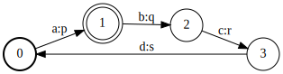
Fig. 25 Visualization of fst-connect.svg (after connect)
This operation determinizes a weighted transducer.
The result will be an equivalent FST that has the property that no state has
two transitions with the same input label. For this algorithm, epsilon
transitions are treated as regular symbols (cf. RmEpsilon).
1importgraphviz 2 3importkaldifst 4 5s=""" 60 1 a p 1 70 2 a q 2 80 1 eps q 3 91 3 c r 5101 3 c r 4112 3 d s 6123 013"""1415sym1=kaldifst.SymbolTable(name="sym1")16sym1.add_symbol("eps",0)17sym1.add_symbol("a",1)18sym1.add_symbol("c",2)19sym1.add_symbol("d",3)2021sym2=kaldifst.SymbolTable(name="sym2")22sym2.add_symbol("eps",0)23sym2.add_symbol("p",1)24sym2.add_symbol("q",2)25sym2.add_symbol("r",3)26sym2.add_symbol("s",4)2728fst=kaldifst.compile(s=s,acceptor=False,isymbols=sym1,osymbols=sym2)29fst.input_symbols=sym130fst.output_symbols=sym23132fst_dot=kaldifst.draw(fst,acceptor=False,portrait=True)33fst_source=graphviz.Source(fst_dot)34fst_source.render(outfile="transducer.svg")3536fst=kaldifst.determinize(fst)3738fst_dot=kaldifst.draw(fst,acceptor=False,portrait=True)39fst_source=graphviz.Source(fst_dot)40fst_source.render(outfile="transducer2.svg")
Fig. 26 Visualization of transducer.svg (before determinization)
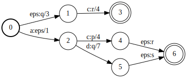
Fig. 27 Visualization of transducer2.svg (after determinization)
in_out – The input/output FST. Note it is modified in-place.
delta – Delta value used to determine equivalence of weights.
max_states – Maximum number of states in determinized FST before it will abort.
use_log – Determinize in log semiring.
Returns
this function will return False
if determinization completed normally, and true if it was stopped early
by reaching the ‘max-states’ limit, and a partial FST was generated.
1importgraphviz 2 3importkaldifst 4 5s=""" 60 1 a p 1 70 2 a q 2 80 1 eps q 3 91 3 c r 5101 3 c r 4112 3 d s 6123 013"""1415sym1=kaldifst.SymbolTable(name="sym1")16sym1.add_symbol("eps",0)17sym1.add_symbol("a",1)18sym1.add_symbol("c",2)19sym1.add_symbol("d",3)2021sym2=kaldifst.SymbolTable(name="sym2")22sym2.add_symbol("eps",0)23sym2.add_symbol("p",1)24sym2.add_symbol("q",2)25sym2.add_symbol("r",3)26sym2.add_symbol("s",4)2728fst=kaldifst.compile(s=s,acceptor=False,isymbols=sym1,osymbols=sym2)29fst.input_symbols=sym130fst.output_symbols=sym23132fst_dot=kaldifst.draw(fst,acceptor=False,portrait=True)33fst_source=graphviz.Source(fst_dot)34fst_source.render(outfile="transducer.svg")3536kaldifst.determinize_star(fst)3738fst_dot=kaldifst.draw(fst,acceptor=False,portrait=True)39fst_source=graphviz.Source(fst_dot)40fst_source.render(outfile="transducer2.svg")
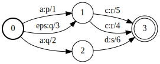
Fig. 28 Visualization of transducer.svg (before determinization)
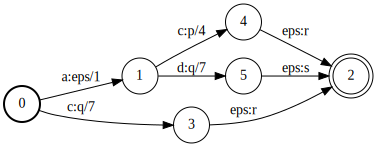
Fig. 29 Visualization of transducer2.svg (after determinization)
1importgraphviz 2 3importkaldifst 4 5s1=""" 60 1 a q 1 70 2 a r 2.5 81 1 c s 1 91 0102 2.511"""1213sym1=kaldifst.SymbolTable(name="sym1")14sym1.add_symbol("a",1)15sym1.add_symbol("c",2)1617sym2=kaldifst.SymbolTable(name="sym2")18sym2.add_symbol("q",1)19sym2.add_symbol("r",2)20sym2.add_symbol("s",3)2122fst=kaldifst.compile(s=s1,acceptor=False,isymbols=sym1,osymbols=sym2)23fst.input_symbols=sym124fst.output_symbols=sym22526fst_dot=kaldifst.draw(fst,acceptor=False,portrait=True)27withopen("fst_dot.txt","w")asf:28f.write(fst_dot)2930fst_source=graphviz.Source(fst_dot)31fst_source.render(outfile="fst.svg")
1importgraphviz 2 3importkaldifst 4 5s1=""" 60 0 e E 0.3 70 1 a A 1 80 1 b B 2.5 91 2 <eps> <eps> 0.3101 2 <eps> <eps> 0.4111 1 f F 0.03122 2 g G 0.8132 3 h H 0.1214315"""1617sym1=kaldifst.SymbolTable(name="sym1")18sym1.add_symbol("<eps>",0)19sym1.add_symbol("a",1)20sym1.add_symbol("b",2)21sym1.add_symbol("c",3)22sym1.add_symbol("d",4)23sym1.add_symbol("e",5)24sym1.add_symbol("f",6)25sym1.add_symbol("g",7)26sym1.add_symbol("h",8)2728sym2=kaldifst.SymbolTable(name="sym2")29sym2.add_symbol("<eps>",0)30sym2.add_symbol("A",1)31sym2.add_symbol("B",2)32sym2.add_symbol("C",3)33sym2.add_symbol("D",4)34sym2.add_symbol("E",5)35sym2.add_symbol("F",6)36sym2.add_symbol("G",7)37sym2.add_symbol("H",8)3839fst=kaldifst.compile(s=s1,acceptor=False,isymbols=sym1,osymbols=sym2)4041fst.input_symbols=sym142fst.output_symbols=sym24344fst_dot=kaldifst.draw(fst,acceptor=False,portrait=True)45fst_source=graphviz.Source(fst_dot)46fst_source.render(outfile="input.svg")4748succeeded,first=kaldifst.equal_align(49ifst=fst,length=4,rand_seed=3,num_retries=1050)51assertsucceededisTrue52first.input_symbols=sym153first.output_symbols=sym15455first_dot=kaldifst.draw(first,acceptor=False,portrait=True)56first_source=graphviz.Source(first_dot)57first_source.render(outfile="first.svg")5859succeeded,second=kaldifst.equal_align(60ifst=fst,length=5,rand_seed=10,num_retries=1061)62assertsucceededisTrue63second.input_symbols=sym164second.output_symbols=sym26566second_dot=kaldifst.draw(second,acceptor=False,portrait=True)67second_source=graphviz.Source(second_dot)68second_source.render(outfile="second.svg")
get_linear_symbol_sequence gets the symbol sequence from a linear FST.
If the FST is not just a linear sequence, it returns false. If it is
a linear sequence (including the empty FST), it returns true. In this
case it outputs the symbol
get_linear_symbol_sequence gets the symbol sequence from a linear FST.
If the FST is not just a linear sequence, it returns false. If it is
a linear sequence (including the empty FST), it returns true. In this
case it outputs the symbol
–arc_filter: type = string, default = “any”
Arc filter: one of: “any”, “epsilon”, “iepsilon”, “oepsilon”;
this only affects the counts of (co)accessible states, connected states,
and (strongly) connected components
–fst_verify: type = bool, default = true
Verify FST sanity
–info_type: type = string, default = “auto”
Info format: one of: “auto”, “long”, “short”
–pipe: type = bool, default = false
Send info to stderr, input to stdout
–test_properties: type = bool, default = true
Compute property values (if unknown to FST)
1#!/usr/bin/env python3 2 3importgraphviz 4 5importkaldifst 6 7s=""" 80 1 a y 1 90 1 b x 3101 1 d v 7111 2 c w 5122 3 f u 9133 214"""15isym=kaldifst.SymbolTable.from_str(16"""17 a 118 b 219 c 320 d 421 f 522"""23)2425osym=kaldifst.SymbolTable.from_str(26"""27 x 128 y 229 u 330 w 431 v 532"""33)3435fst=kaldifst.compile(36s,37acceptor=False,38isymbols=isym,39osymbols=osym,40keep_isymbols=True,41keep_osymbols=True,42)434445fst_dot=kaldifst.draw(fst,acceptor=False,portrait=True)46fst_source=graphviz.Source(fst_dot)47fst_source.render(outfile="before-invert.svg")4849kaldifst.invert(fst)5051fst_dot=kaldifst.draw(fst,acceptor=False,portrait=True)52fst_source=graphviz.Source(fst_dot)53fst_source.render(outfile="after-invert.svg")
1#!/usr/bin/env python3 2 3importgraphviz 4 5importkaldifst 6 7s=""" 80 1 a 2 90 1 b 2100 1 c 3110 2 d 3120 2 f 1131 3 f 3141 3 g 2153 1162 4 f 5172 4 g 4184 319"""2021isym=kaldifst.SymbolTable.from_str(22"""23 a 124 b 225 c 326 d 427 f 528 g 629"""30)3132fst=kaldifst.compile(33s,34acceptor=True,35isymbols=isym,36keep_isymbols=True,37)3839fst_dot=kaldifst.draw(fst,acceptor=True,portrait=True)40fst_source=graphviz.Source(fst_dot)41fst_source.render(outfile="acceptor.svg")4243kaldifst.minimize(fst)4445fst_dot=kaldifst.draw(fst,acceptor=True,portrait=True)46fst_source=graphviz.Source(fst_dot)47fst_source.render(outfile="acceptor-minimized.svg")
Fig. 37 Visualization of acceptor.svg (before minimize)
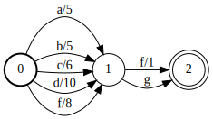
Fig. 38 Visualization of acceptor-minimized.svg (after minimize)
1#!/usr/bin/env python3 2 3importgraphviz 4 5importkaldifst 6 7s=""" 80 1 a a 2 90 1 b a 2100 1 c a 3110 2 d a 3120 2 f a 1131 3 f b 3141 3 g b 2153 1162 4 f c 5172 4 g c 4184 319"""2021isym=kaldifst.SymbolTable.from_str(22"""23 a 124 b 225 c 326 d 427 f 528 g 629"""30)3132osym=kaldifst.SymbolTable.from_str(33"""34 a 135 b 236 c 337"""38)394041fst=kaldifst.compile(42s,43acceptor=False,44isymbols=isym,45osymbols=osym,46keep_isymbols=True,47keep_osymbols=True,48)4950fst_dot=kaldifst.draw(fst,acceptor=False,portrait=True)51fst_source=graphviz.Source(fst_dot)52fst_source.render(outfile="transducer.svg")5354kaldifst.minimize(fst)5556fst_dot=kaldifst.draw(fst,acceptor=False,portrait=True)57fst_source=graphviz.Source(fst_dot)58fst_source.render(outfile="transducer-minimized.svg")
Fig. 39 Visualization of transducer.svg (before minimize)
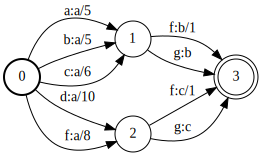
Fig. 40 Visualization of transducer-minimized.svg (after minimize)
1#!/usr/bin/env python3 2 3importgraphviz 4 5importkaldifst 6 7s=""" 80 1 a 2 90 1 b 2100 1 c 3110 2 d 3120 2 f 1131 3 f 3141 3 g 2153 1162 4 f 5172 4 g 4184 319"""2021isym=kaldifst.SymbolTable.from_str(22"""23 a 124 b 225 c 326 d 427 f 528 g 629"""30)3132fst=kaldifst.compile(33s,34acceptor=True,35isymbols=isym,36keep_isymbols=True,37)3839fst_dot=kaldifst.draw(fst,acceptor=True,portrait=True)40fst_source=graphviz.Source(fst_dot)41fst_source.render(outfile="acceptor.svg")4243fst.write("acceptor.fst")44kaldifst.minimize_encoded(fst)4546fst_dot=kaldifst.draw(fst,acceptor=True,portrait=True)47fst_source=graphviz.Source(fst_dot)48fst_source.render(outfile="acceptor-minimize-encoded.svg")
Fig. 41 Visualization of acceptor.svg (before minimize_encoded)
Fig. 42 Visualization of acceptor-minimize-encoded.svg (after minimize_encoded)
1#!/usr/bin/env python3 2 3importgraphviz 4 5importkaldifst 6 7s=""" 80 1 a a 2 90 1 b a 2100 1 c a 3110 2 d a 3120 2 f a 1131 3 f b 3141 3 g b 2153 1162 4 f c 5172 4 g c 4184 319"""2021isym=kaldifst.SymbolTable.from_str(22"""23 a 124 b 225 c 326 d 427 f 528 g 629"""30)3132osym=kaldifst.SymbolTable.from_str(33"""34 a 135 b 236 c 337"""38)394041fst=kaldifst.compile(42s,43acceptor=False,44isymbols=isym,45osymbols=osym,46keep_isymbols=True,47keep_osymbols=True,48)4950fst_dot=kaldifst.draw(fst,acceptor=False,portrait=True)51fst_source=graphviz.Source(fst_dot)52fst_source.render(outfile="transducer.svg")5354kaldifst.minimize_encoded(fst)5556fst_dot=kaldifst.draw(fst,acceptor=False,portrait=True)57fst_source=graphviz.Source(fst_dot)58fst_source.render(outfile="transducer-minimize-encoded.svg")
Fig. 43 Visualization of transducer.svg (before minimize_encoded)
Fig. 44 Visualization of transducer-minimize-encoded.svg (after minimize encoded)
This operation reverses an FST. If A transduces string x to y with weight a,
then the reverse of A transduces the reverse of x to the reverse of y
with weight a.Reverse().
require_superinitial – True to create a superinitial state.
Returns
Return the reversed FST.
Example 1 Revert an acceptor (require_superinitial=True)
Listing 32 Revert an acceptor using require_superinitial=True
1#!/usr/bin/env python3 2 3importgraphviz 4 5importkaldifst 6 7s=""" 80 0 a 2 90 1 a 1101 3111 2 b 3121 2 b 4132 2 d 5142 3 d 6153 3 f 2163 217"""18isym=kaldifst.SymbolTable.from_str(19"""20 eps 021 a 122 b 223 c 324 d 425 f 526"""27)2829fst=kaldifst.compile(30s,31acceptor=True,32isymbols=isym,33keep_isymbols=True,34)3536fst_dot=kaldifst.draw(fst,acceptor=True,portrait=True)37fst_source=graphviz.Source(fst_dot)38fst_source.render(outfile="acceptor-before-reverse.svg")3940fst=kaldifst.reverse(fst,require_superinitial=True)4142fst_dot=kaldifst.draw(fst,acceptor=True,portrait=True)43fst_source=graphviz.Source(fst_dot)44fst_source.render(outfile="acceptor-after-reverse.svg")
Fig. 45 Visualization of acceptor-before-reverse.svg
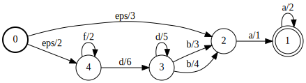
Fig. 46 Visualization of acceptor-after-reverse.svg using require_superinitial=True
Example 2 Revert an acceptor (require_superinitial=False)
Listing 33 Revert an acceptor using require_superinitial=False
1#!/usr/bin/env python3 2 3importgraphviz 4 5importkaldifst 6 7s=""" 80 0 a 2 90 1 a 1101 3111 2 b 3121 2 b 4132 2 d 5142 3 d 6153 3 f 2163 217"""18isym=kaldifst.SymbolTable.from_str(19"""20 eps 021 a 122 b 223 c 324 d 425 f 526"""27)2829fst=kaldifst.compile(30s,31acceptor=True,32isymbols=isym,33keep_isymbols=True,34)3536fst_dot=kaldifst.draw(fst,acceptor=True,portrait=True)37fst_source=graphviz.Source(fst_dot)38fst_source.render(outfile="acceptor-before-reverse-2.svg")3940fst=kaldifst.reverse(fst,require_superinitial=False)4142fst_dot=kaldifst.draw(fst,acceptor=True,portrait=True)43fst_source=graphviz.Source(fst_dot)44fst_source.render(outfile="acceptor-after-reverse-2.svg")
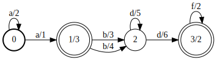
Fig. 47 Visualization of acceptor-before-reverse-2.svg
Fig. 48 Visualization of acceptor-after-reverse-2.svg using require_superinitial=False
Example 3 Revert a transducer (require_superinitial=False)
Listing 34 Revert a transducer using require_superinitial=True
1#!/usr/bin/env python3 2 3importgraphviz 4 5importkaldifst 6 7s=""" 80 1 a a 91 2 b b101 3 c c112 4 eps eps123 4 eps eps13414"""15isym=kaldifst.SymbolTable.from_str(16"""17 eps 018 a 119 b 220 c 321"""22)2324fst=kaldifst.compile(25s,26acceptor=False,27isymbols=isym,28osymbols=isym,29keep_isymbols=True,30keep_osymbols=True,31)3233fst_dot=kaldifst.draw(fst,acceptor=False,portrait=True)34fst_source=graphviz.Source(fst_dot)35fst_source.render(outfile="transducer-before-reverse.svg")3637fst=kaldifst.reverse(fst,require_superinitial=True)3839fst_dot=kaldifst.draw(fst,acceptor=False,portrait=True)40fst_source=graphviz.Source(fst_dot)41fst_source.render(outfile="transducer-after-reverse.svg")
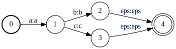
Fig. 49 Visualization of transducer-before-reverse.svg
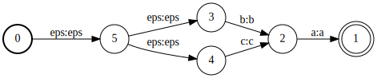
Fig. 50 Visualization of transducer-after-reverse.svg using require_superinitial=True
Example 4 Revert a transducer (require_superinitial=False)
Listing 35 Revert a transducer using require_superinitial=False
1#!/usr/bin/env python3 2 3importgraphviz 4 5importkaldifst 6 7s=""" 80 1 a a 91 2 b b101 3 c c112 4 eps eps123 4 eps eps13414"""15isym=kaldifst.SymbolTable.from_str(16"""17 eps 018 a 119 b 220 c 321"""22)2324fst=kaldifst.compile(25s,26acceptor=False,27isymbols=isym,28osymbols=isym,29keep_isymbols=True,30keep_osymbols=True,31)3233fst_dot=kaldifst.draw(fst,acceptor=False,portrait=True)34fst_source=graphviz.Source(fst_dot)35fst_source.render(outfile="transducer-before-reverse-2.svg")3637fst=kaldifst.reverse(fst,require_superinitial=False)3839fst_dot=kaldifst.draw(fst,acceptor=False,portrait=True)40fst_source=graphviz.Source(fst_dot)41fst_source.render(outfile="transducer-after-reverse-2.svg")
Fig. 51 Visualization of transducer-before-reverse-2.svg
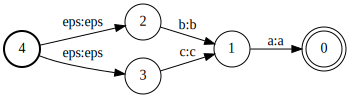
Fig. 52 Visualization of transducer-after-reverse-2.svg using require_superinitial=False
This operation removes epsilon-transitions (when both the input and output
label are an epsilon) from a transducer. The result will be an equivalent FST
that has no such epsilon transitions.
The copying is constant time if safe = false or if safe = true and is on an otherwise unaccessed FST.
(2) If safe = true, the copy is thread-safe in that the original
and copy can be safely accessed (but not necessarily mutated) by
separate threads. For some FST types, ‘Copy(true)’ should only
be called on an FST that has not otherwise been accessed.
Behavior is otherwise undefined.
(3) If a MutableFst is copied and then mutated, then the original
is unmodified and vice versa (often by a copy-on-write on the
initial mutation, which may not be constant time).
The copying is constant time if safe = false or if safe = true and is on an otherwise unaccessed FST.
(2) If safe = true, the copy is thread-safe in that the original
and copy can be safely accessed (but not necessarily mutated) by
separate threads. For some FST types, ‘Copy(true)’ should only
be called on an FST that has not otherwise been accessed.
Behavior is otherwise undefined.
(3) If a MutableFst is copied and then mutated, then the original
is unmodified and vice versa (often by a copy-on-write on the
initial mutation, which may not be constant time).
The copying is constant time if safe = false or if safe = true and is on an otherwise unaccessed FST.
(2) If safe = true, the copy is thread-safe in that the original
and copy can be safely accessed (but not necessarily mutated) by
separate threads. For some FST types, ‘Copy(true)’ should only
be called on an FST that has not otherwise been accessed.
Behavior is otherwise undefined.
(3) If a MutableFst is copied and then mutated, then the original
is unmodified and vice versa (often by a copy-on-write on the
initial mutation, which may not be constant time).
The copying is constant time if safe = false or if safe = true and is on an otherwise unaccessed FST.
(2) If safe = true, the copy is thread-safe in that the original
and copy can be safely accessed (but not necessarily mutated) by
separate threads. For some FST types, ‘Copy(true)’ should only
be called on an FST that has not otherwise been accessed.
Behavior is otherwise undefined.
(3) If a MutableFst is copied and then mutated, then the original
is unmodified and vice versa (often by a copy-on-write on the
initial mutation, which may not be constant time).